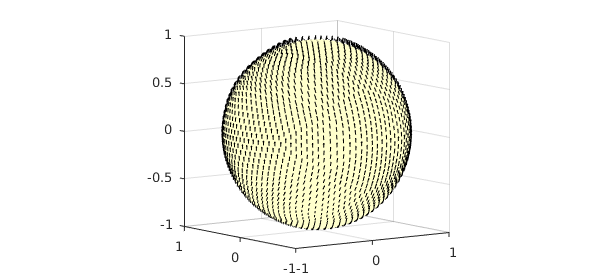
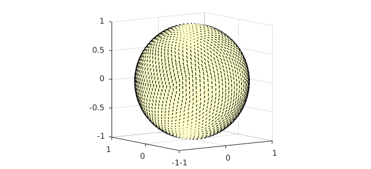
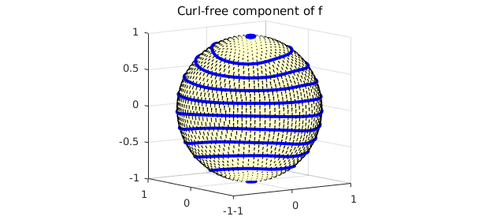
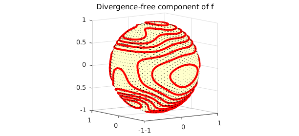
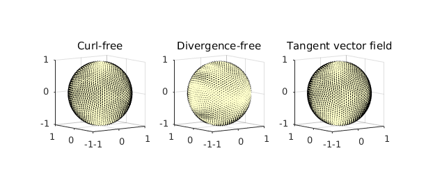

1. The Helmholtz-Hodge decomposition
A special case of the Helmholtz-Hodge theorem states that any vector field that is tangent to the sphere can be uniquely decomposed into a sum of a surface divergence-free component and a surface curl-free component. In this Example, we show how this decomposition can be computed by Spherefun and introduce the command helmholtzdecomp.
In mathematical notation, the Helmholtz-Hodge decomposition says that we can write any vector field tangent to the surface of the sphere as the sum $$ \mathbf{f} = \nabla \phi + \nabla \times \psi, $$ where $\phi$ and $\psi$ are scalar-valued potential functions that are unique up to a constant. Here $\nabla$ is the surface gradient on the sphere, and we use the standard abuse of notation that $\nabla \times \psi$ means the cross-product of the surface gradient of $\psi$ with the unit normal vector, $\hat{\mathbf{n}}$, to the sphere, i.e., $\hat{\mathbf{n}} \times \nabla \psi$.
The components $\phi$ and $\psi$ give useful diagnostic information about a flow field. For example, for winds in the upper atmosphere, $\psi$ gives information about cyclonic storms, while $\phi$ can be used to detect high and low pressure systems [1].
To illustrate the decomposition, we take the following vector field:
f = spherefunv( @(x,y,z) y.*z.*cos(x.*y.*z), ...
@(x,y,z) x.*z.*sin(4*x+.1*y+5*z.^2), @(x,y,z) 1+x.*y.*z );
quiver3( f ), view([-36 8])

The vector field is not tangent to the surface of the sphere, so we project it onto the tangent space:
f = tangent( f ); quiver3( f ), view([-36 8])

2. Computing the curl-free component
Since the divergence of a curl is zero, we know that $$ \nabla \cdot \mathbf{f} = \nabla \cdot \nabla \phi = \nabla^2 \phi, $$ where the last equality holds because the divergence of a gradient is the Laplacian. Therefore, we can solve for $\phi$ in the Helmholtz-Hodge decomposition as follows:
phi = spherefun.poisson( divergence(f), 0, 251 );
quiver3( gradient( phi ) ), hold on,
LW = 'linewidth';
contour( phi, 'b-', LW , 2 ),
title('Curl-free component of f')
view([-36 8]), hold off

We confirm that this component is curl-free:
norm( vorticity( gradient( phi ) ) )
ans =
5.847722944578346e-13
3. Computing the divergence-free component
Since the vorticity (normal component of the surface curl) of a gradient field on the surface of the sphere is zero, we have the identity $$ \hat{\mathbf{n}} \cdot (\nabla \times \mathbf{f}) = \hat{\mathbf{n}} \cdot (\nabla \times \psi). $$ Using the idenity that the vorticity of the surface curl of a scalar potential is just the surface Laplacian of the potential, we have $$ \hat{\mathbf{n}} \cdot (\nabla \times \mathbf{f}) = \nabla^2 \psi. $$ Therefore, we can solve for $\psi$ in the Helmholtz-Hodge decomposition as follows:
psi = spherefun.poisson( vorticity(f), 0, 251 );
quiver3( curl( psi ) ), hold on,
contour( psi, 'r-', LW , 2 ),
title('Divergence-free component of f')
view([-36 8]), hold off

By vector identities this component is divergence-free:
norm( divergence( curl( psi ) ) )
ans =
4.181828939872741e-13
4. Plotting the decomposition
Here is a plot of the decomposition.
subplot(1,3,1)
quiver3( gradient( phi ) ), title('Curl-free'), view([-36 8])
subplot(1,3,2)
quiver3( curl( psi ) ), title('Divergence-free'), view([-36 8])
subplot(1,3,3)
quiver3( f ), title('Tangent vector field'), view([-36 8])

As a sanity check we confirm that the decomposition has been successful:
h = grad( phi ) + curl( psi ); norm( f - h )
ans =
7.300692456320517e-14
5. The helmholtzdecomp command
Spherefun has a command command helmholtzdecomp that computes the Helmholtz-Hodge decomposition of a vector field that is tangent to the surface. Therefore, this example can be replicated with the following code:
[phi, psi] = helmholtzdecomp( f );
clf, quiver( f ), hold on
contour( phi, 'b-', LW , 2 )
contour( psi, 'r-', LW , 2 )
title('f (arrows), \phi (black), and \psi (red)')
view([-36 8])
6. References
[1] E. J. Fuselier and G. B. Wright, Stability and error estimates for vector field interpolation and decomposition on the sphere with RBFs, SIAM J. Numer. Anal., 47 (2009), 3213-3239.
[2] A. Townsend, H. Wilber, and G. B. Wright, Computing with functions in spherical and poler geometries I. The sphere, SIAM J. Sci. Comp., to appear in 2016